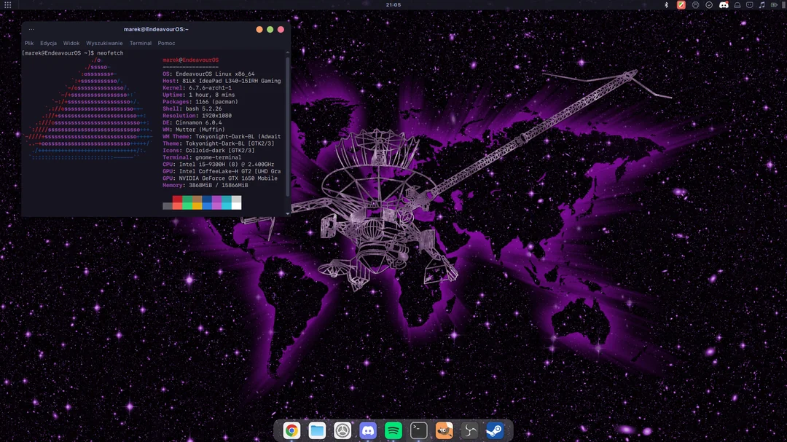
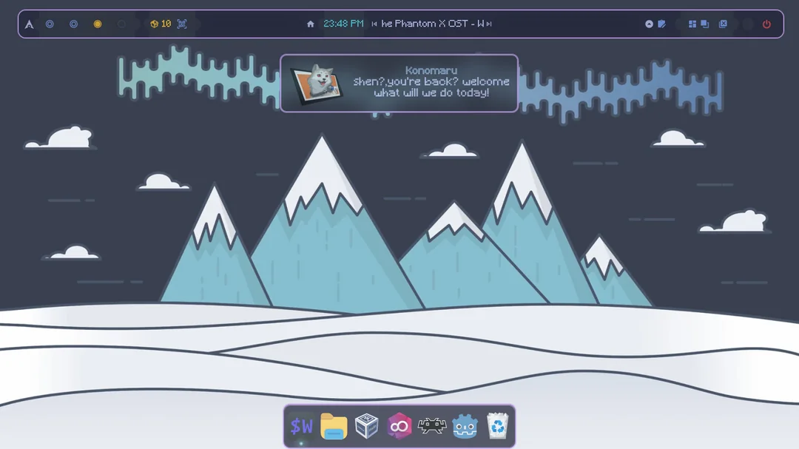
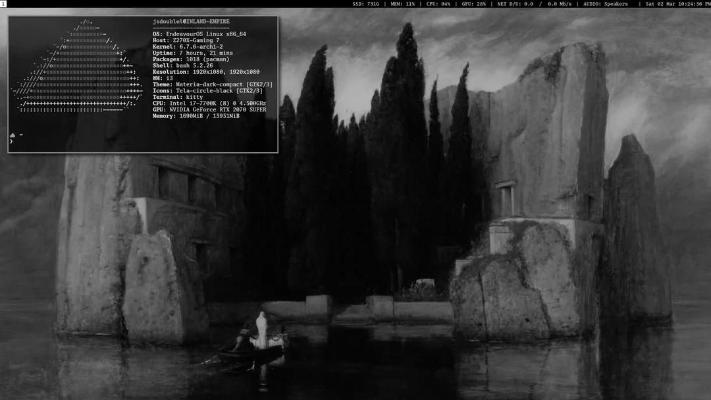
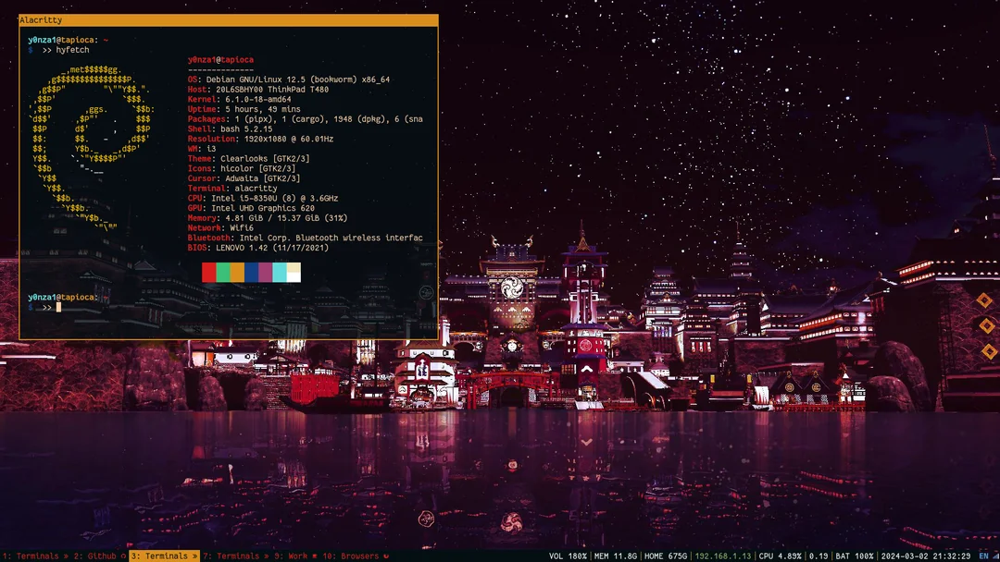

RICING LINUX
QUÉ ES
Resumidamente, Ricing Linux es el nombre que se le da a la personalización de la interfaz de usuario en sistemas operativos Linux para que quede acorde a los gustos del usuario y que a su vez sea práctica a la hora de utilizarla.
WINDOW MANAGERS
Los window managers o gestores de ventanas son lo más usado para los rices en Linux ya que son sencillos de personalizar y bastante eficientes a la hora de trabajar. Algunos ejemplos son qtile, bspwm, i3wm o dwm.
TUTORIAL
EJEMPLOS

ABRIR


ABRIR


ABRIR

ABRIR